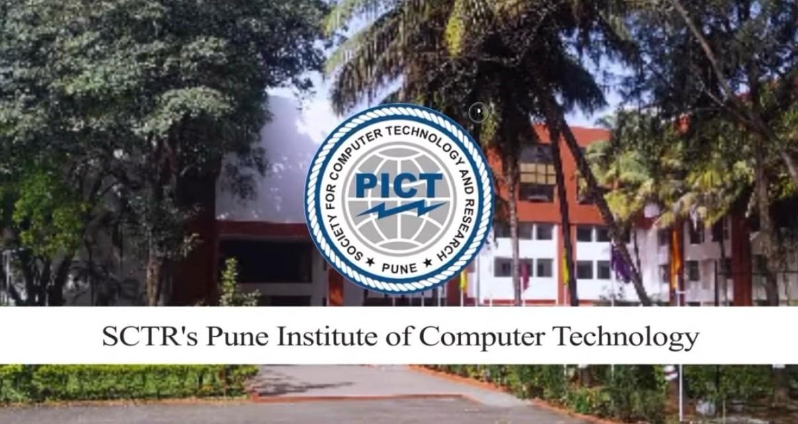

University of Colorado Boulder
M.S Computer Science (2024 - 2026)
I am currently pursuing my Master's degree in Computer Science at the University of Colorado Boulder, focusing on Robotics, Perception, and Learning Systems. My academic work centers around real-time intelligent systems, reinforcement learning, and computer vision.
GPA: 3.8 / 4.0
Relevant Coursework:
Advanced Robotics • Neural Networks • Computer Vision • Advanced ML • Reinforcement and Deep Learning
Relevant Coursework:
Advanced Robotics • Neural Networks • Computer Vision • Advanced ML • Reinforcement and Deep Learning


Pune Institute of Computer Technology
B.E Information Technology
Completed my undergraduate degree in Information Technology, where I built a strong foundation in algorithms, systems programming, and applied machine learning. This period shaped my transition toward robotics and perception-driven systems.
GPA: 3.8 / 4.0